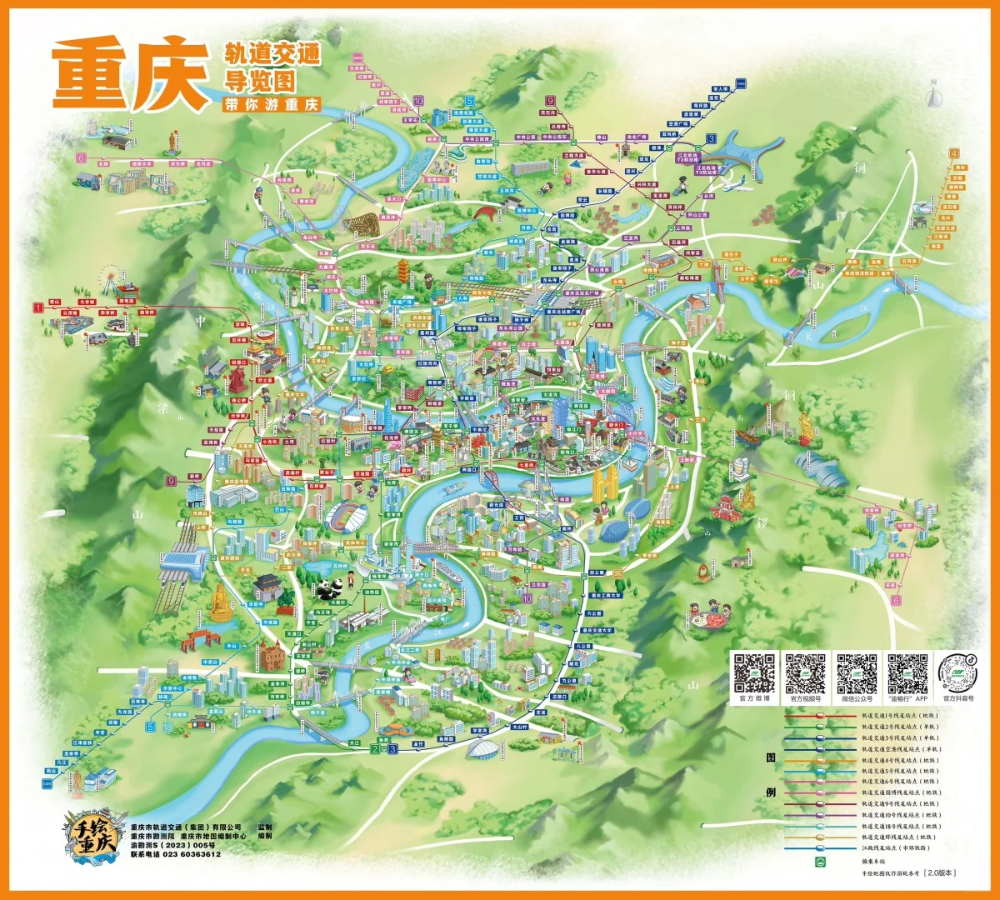
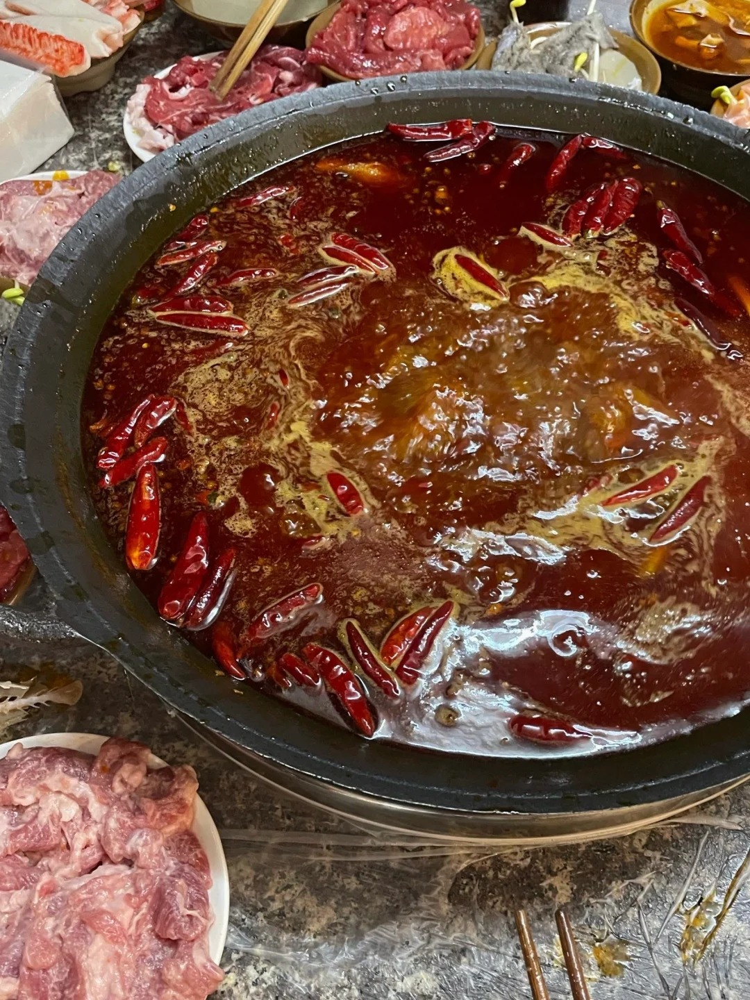
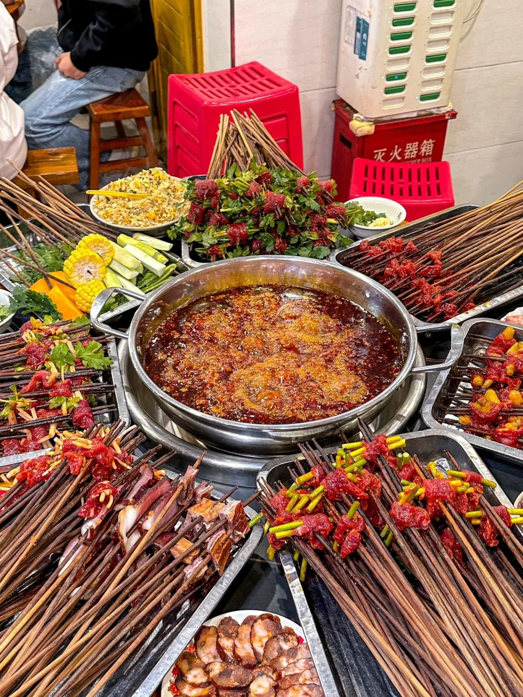
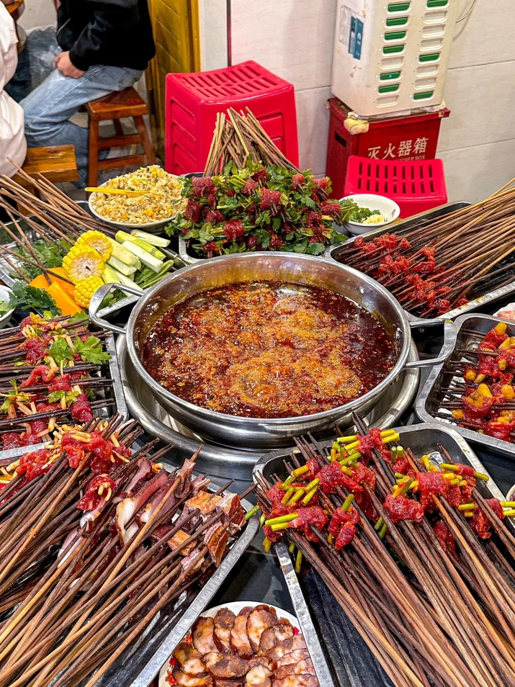
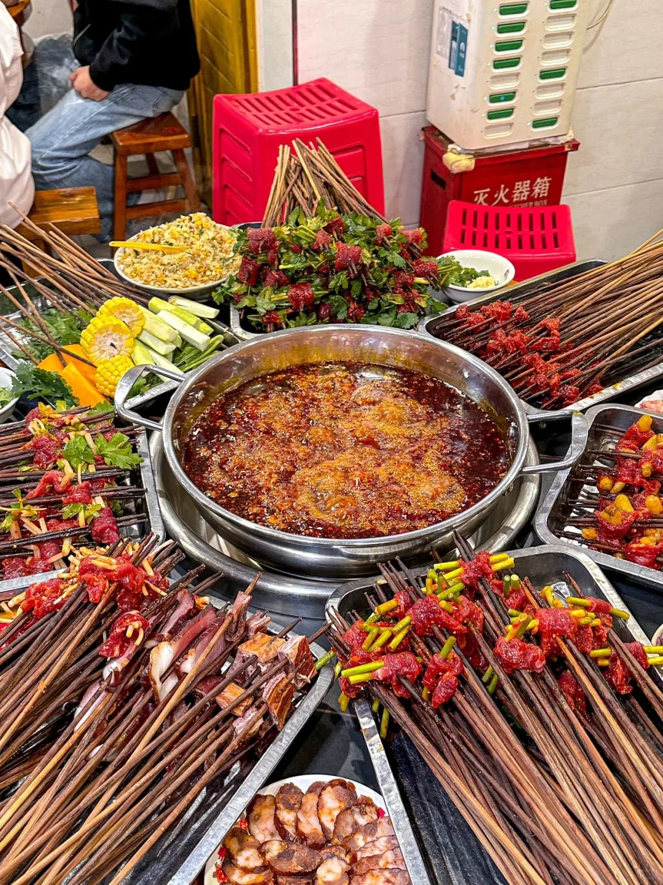

南方画廊
重庆印象
重庆，这座被誉为“山城”的城市，以其独特的地貌、多层次的城市结构和夜景闻名于世。夜幕降临，灯火辉煌的山水都市展现出令人惊艳的魅力。
地理位置与环境
重庆位于中国西南部，长江与嘉陵江交汇处，是中西部地区唯一的直辖市。地势以丘陵山地为主，气候属亚热带湿润气候，夏季炎热，冬季温和。城市沿江而建，桥梁众多，地形起伏大，被称为“8D魔幻城市”。
风景名胜
重庆拥有丰富的自然风光和人文景观，包括著名的洪崖洞、解放碑、磁器口古镇和长江三峡。
重庆美食
重庆美食以麻辣著称，火锅、小面、串串香等均广受欢迎。地道的重庆火锅以其红油汤底、丰富食材和热辣口感闻名，体现了重庆人直爽豪放的性格。

 


“一锅红汤万千味，重庆火锅最销魂。”
文化特色
重庆以其火锅文化闻名全国，同时也是巴渝文化的重要发源地。这里的人们热情好客，生活节奏快，夜生活丰富。
“重庆的火锅不仅是一种美食，更是一种文化的象征。”